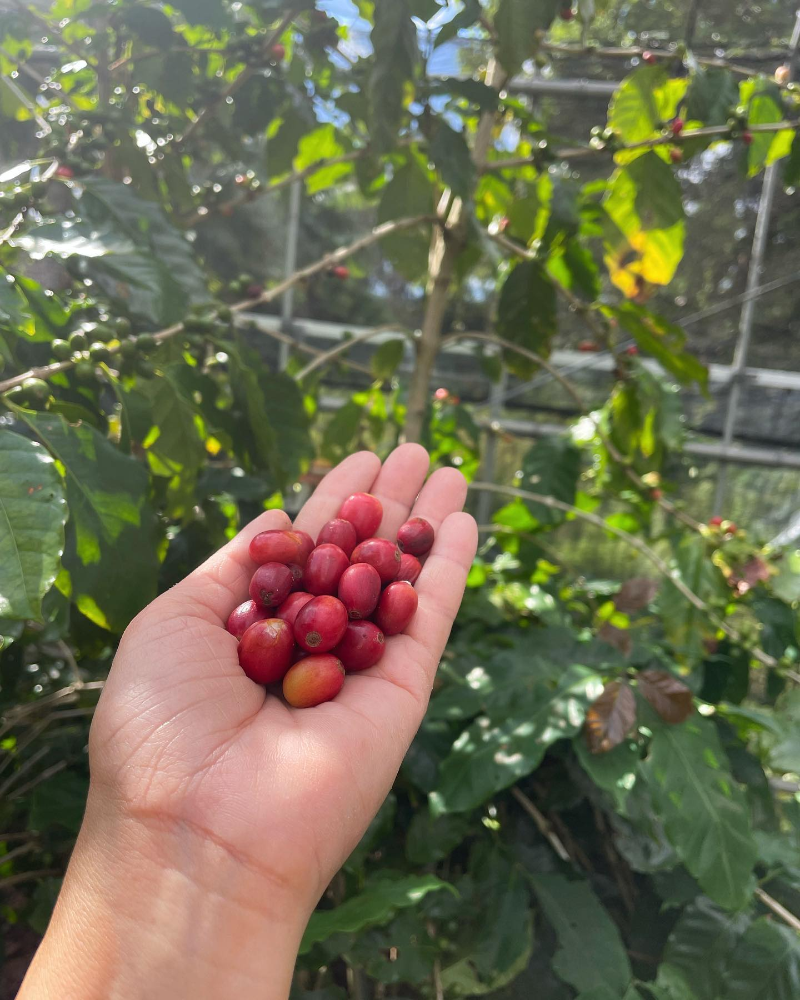
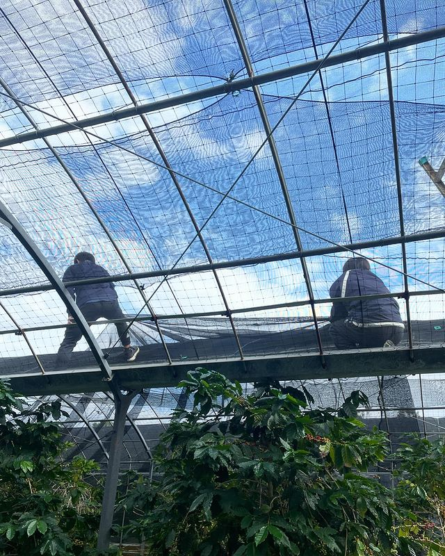
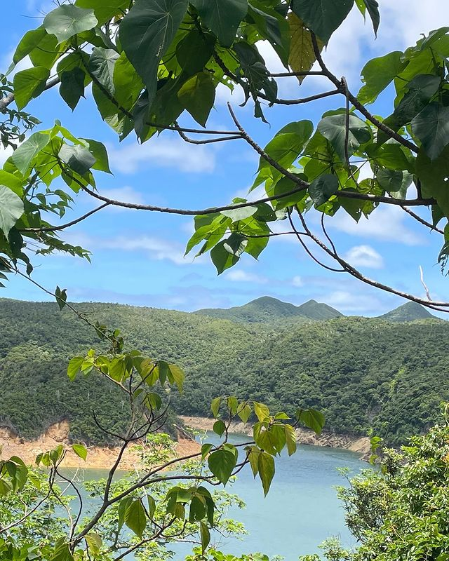

沖縄県国頭郡東村のコーヒー農園
家族経営の始まり
このコーヒー農園は、沖縄県北部の美しい東村に位置し、2007年に創業者がコーヒー好きの妻のために設立しました。
現在は、二代目が共に農園を運営しています。やんばるの大自然に囲まれたこの農園では、環境と調和した高品質なコーヒー作りに力を注いでいます。

手摘みと最適な管理
農園では、木をよく観察し、施肥や収穫を最適なタイミングで行うことに努めています。
私たちの主要な実践の一つは、完熟したチェリーだけを手摘みで収穫することです。
また、海外の生産国の栽培方法を学び、自分たちの農園環境に最適な方法を模索しています。

台風への挑戦と対応
沖縄でのコーヒー栽培における最大の挑戦は台風です。
私たちの主要な実践の一つは、完熟したチェリーだけを手摘みで収穫することです。
時には台風で多くの木が倒され、収穫量が減少することもありますが、その経験を基に他の生産者と情報や戦略を共有しながら影響を軽減しています。

やんばるの豊かな生態系
農園からは世界自然遺産であるやんばるの森を望むことができ、豊かな自然環境やその動植物と調和したコーヒー作りを心がけています。
「やんばる」の語源は沖縄方言の「山原（やんばる）」で、「野山」を意味します。
やんばるは日本全体の0.1%にも満たない面積ながら、日本の鳥類の約半分、在来のカエルの約1/4が生息するなど、豊かな生物多様性を誇ります。
この豊かな生物多様性の中で育まれたコーヒーは、その風味にも特別な魅力を与えています。
